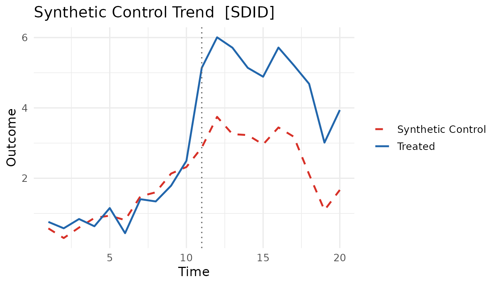
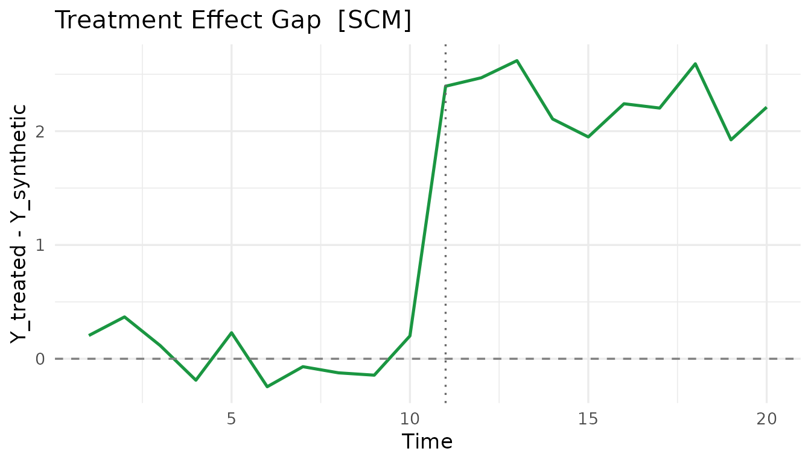
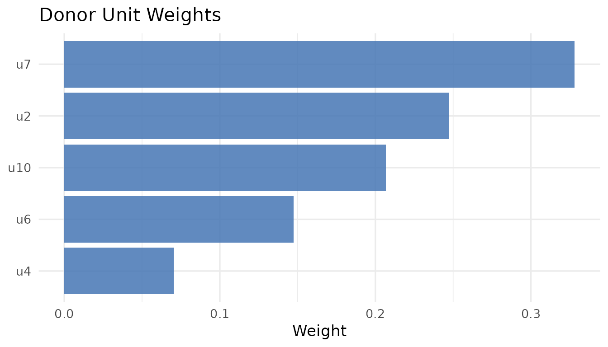

coresynth provides six causal-inference estimators
for panel data behind a single formula interface, with the computational
core (QP solving, SVD, Kalman filtering) written in C++ via
RcppArmadillo. This vignette walks through the basics: fitting a model,
comparing methods, and pulling results out with broom and
plot().
The unified formula
Every estimator is reached through scm_fit() with the
same formula syntax:
outcome ~ treatment | unit_id + time_idThe data must be a long-format balanced panel (one
row per unit–time), and treatment is a 0/1 indicator that
switches on for treated units in post-treatment periods.
method = selects the estimator.
A toy panel
We simulate a balanced panel of 10 units over 20 periods. Unit
u1 is treated from period 11 onward with a true ATT of
2.0.
set.seed(42)
N <- 10; TT <- 20; T_pre <- 10
f <- cumsum(rnorm(TT, 0, 0.5)) # common factor
lam <- rnorm(N, 1, 0.3) # unit loadings
dat <- expand.grid(time = seq_len(TT), id = paste0("u", seq_len(N)))
dat$y <- as.vector(outer(f, lam)) + rnorm(nrow(dat), 0, 0.3)
dat$d <- as.integer(dat$id == "u1" & dat$time > T_pre)
dat$y[dat$d == 1] <- dat$y[dat$d == 1] + 2.0 # inject the treatment effect
head(dat)
#> time id y d
#> 1 1 u1 0.7590559 0
#> 2 2 u1 0.5774968 0
#> 3 3 u1 0.8414384 0
#> 4 4 u1 0.6355518 0
#> 5 5 u1 1.1532557 0
#> 6 6 u1 0.4384856 0Fitting one method
fit <- scm_fit(y ~ d | id + time, data = dat, method = "scm")
fit
#> === coresynth fit ===
#> Method : SCM
#> Estimate (ATT): 2.2712
#> Pre-treatment periods: 10The estimated ATT lives in fit$estimate:
fit$estimate
#> [1] 2.271164Comparing all six methods
Because the interface is shared, swapping estimators is a one-word change. Here we run all six on the same data (true ATT = 2.0).
methods <- c("scm", "sdid", "gsc", "mc", "tasc", "si")
fits <- lapply(methods, function(m) scm_fit(y ~ d | id + time, data = dat, method = m))
names(fits) <- methods
data.frame(
method = methods,
estimate = round(sapply(fits, `[[`, "estimate"), 3)
)
#> method estimate
#> scm scm 2.271
#> sdid sdid 2.150
#> gsc gsc 2.255
#> mc mc 2.696
#> tasc tasc 1.154
#> si si 2.346| Method | Reference |
|---|---|
scm |
Abadie, Diamond & Hainmueller (2010) |
sdid |
Arkhangelsky et al. (2021) |
gsc |
Xu (2017) |
mc |
Athey et al. (2021) |
tasc |
Rho et al. (2026) |
si |
Agarwal et al. (2025) |
Visualizing a fit
plot.coresynth() offers three views via
type =.
plot(fits$sdid, type = "trend") # observed vs. synthetic
plot(fits$scm, type = "gap") # treatment effect over time
plot(fits$scm, type = "weights") # donor weights
tidy / glance / augment
coresynth integrates with broom, so results drop
straight into tidy workflows and paper tables.
library(broom)
tidy(fits$scm) # donor weights as a data frame
#> term estimate type
#> 1 u2 0.24733877 unit_weight
#> 2 u3 0.00000000 unit_weight
#> 3 u4 0.07036082 unit_weight
#> 4 u5 0.00000000 unit_weight
#> 5 u6 0.14754253 unit_weight
#> 6 u7 0.32811909 unit_weight
#> 7 u8 0.00000000 unit_weight
#> 8 u9 0.00000000 unit_weight
#> 9 u10 0.20663878 unit_weight
glance(fits$scm) # one-row model summary
#> method estimate n_controls n_treated T_pre T_post staggered multi_arm
#> 1 scm 2.271164 9 1 10 10 FALSE FALSEexport_json() writes a fit to disk as JSON for
reproducibility or downstream (e.g. AI) workflows:
export_json(fits$scm, file = "scm_result.json")Where to next
- Estimators — covariates, predictors, and method-specific options for all six estimators plus the experimental-design variant.
- Inference — placebo, bootstrap, jackknife, parametric, and conformal inference.
- Staggered adoption — cohort-based estimation when units adopt treatment at different times.